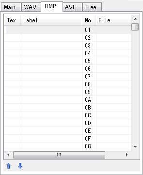

Label
No
File
Move up (
Move down (
| Tab properties |
|---|
| [BMP] tab |
"BMP tab" manages BMP cell list used in DTX score
BMP can handle 1295 BMP files(BMP cell).
Each BMP cells have the number 01-ZZ (36-decimal expression), and each cells have one label and one filename.
Please see "Image property" to know how to specify these items.
DTXMania supports two ways to show images ... by Surface and by Texture. The differences are below;
| Surface | Texture | |
| Technology | DirectDraw | Direct3D |
| Transparency | Complete black(RGB=0,0,0) is used as the transparent key color | Alpha value is used |
| Supported image formats | bmp, jpeg, png | PNG only (RGB24bit+Alpha) |
If you use Texture, you can use half-transparented image. However, the usage of Texture is limited (by width/height, VRAM size etc..). So you should not to use MANY Textures.

Tex
Label
No
File
Move up ( )
)
Move down ( )
)
"o" is shown if the BMP ceil is handled as a texture.
It shows the lavel named to the AVI cell.
In the DTX file, the lavel strings are used to the comments of #AVI command.
The number of BMP cell. It has the value 01-ZZ (36-decimal expression).
The chips drawn on the score are distinguished by the number.
The image filename related to the BMP cell.
It is represented as the relative path from the DTX file you're making.
It move up/down the BMP cell in the BMP cell list.
It causes the decrement/increment the number of the BMP cell,
and the chip's number on the score are also changed automatically.